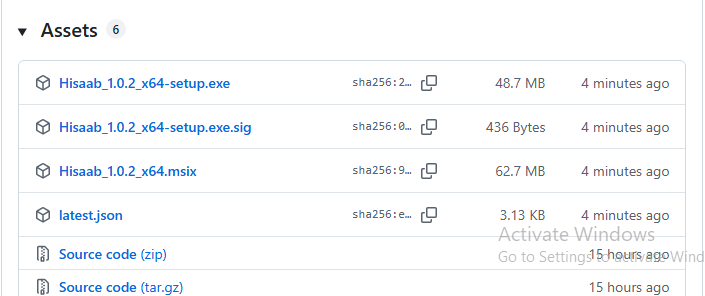
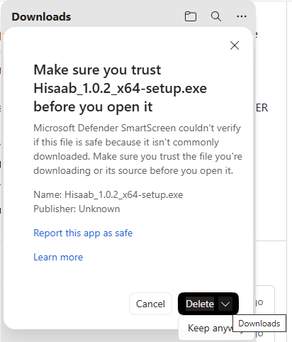
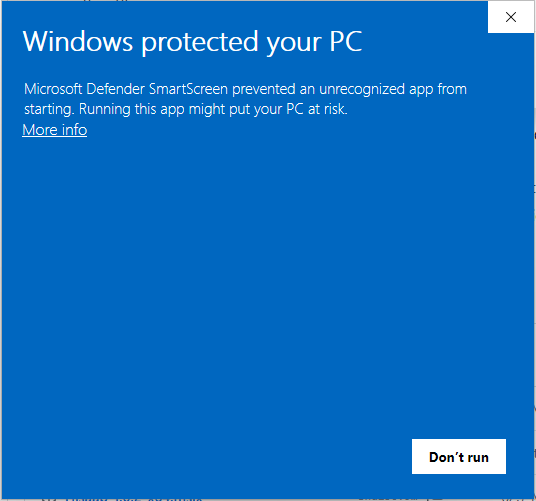
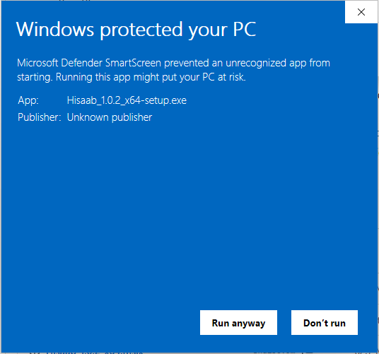
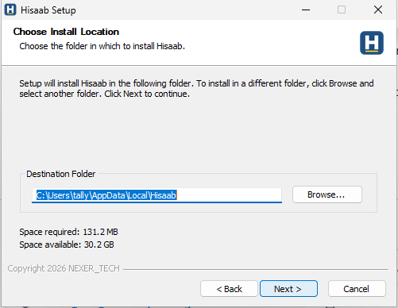
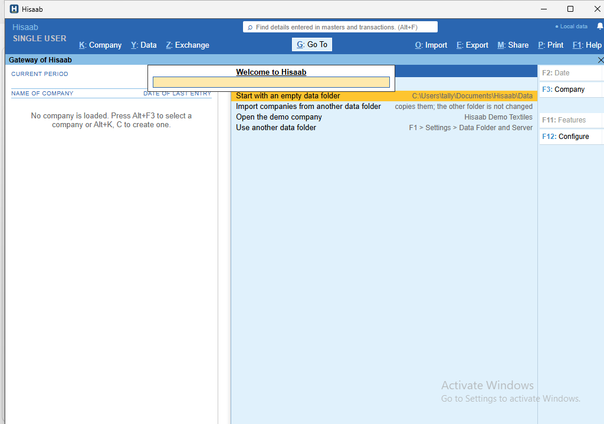
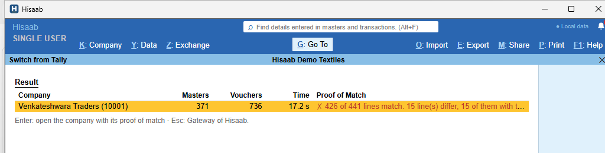

Install Hisaab
Hisaab 1.0.4 for Windows 10 and 11 (64-bit) · the setup file · by NEXER_TECH
In short: download
Hisaab_1.0.4_x64-setup.exe, open it, click More info and Run anyway in the blue Windows window, then click Next two times. You need no administrator password. Your books stay on your PC in Documents\Hisaab.
- Before you start
- Download
- "Windows protected your PC"
- Install
- First start
- Where your data is
- How updates come
- Uninstall (the data stays)
- Support
1Before you start
- A PC with Windows 10 or Windows 11, 64-bit, and about 400 MB of free disk space.
- You do not need an administrator password: Hisaab installs for the current Windows user only.
- TallyPrime can stay on the PC. Hisaab only reads Tally's data when you use Switch from Tally; it does not change it.
- Take a backup in TallyPrime first (Alt+Y > Backup). It is good practice before every change.
2Download
- Open the releases page:
Hisaab releases page - Under Assets, click
Hisaab_1.0.4_x64-setup.exe(about 49 MB). Do not take the other files:.sigandlatest.jsonare for the updates,.msixis the Microsoft Store package. - The browser can show "… isn't commonly downloaded". Point to the file in the download list and click … (more actions) > Keep. When the browser asks again ("Make sure you trust …"), click the small arrow next to Delete > Keep anyway.

Hisaab_1.0.4_x64-setup.exe.
3"Windows protected your PC"
When you open the setup file, Windows can show a blue window with the title Windows protected your PC.
- Click More info.
- Check the line App: Hisaab_1.0.4_x64-setup.exe.
- Click Run anyway.
Why Windows shows this window: the setup file is not signed yet with a paid code-signing certificate, so Windows does not know the publisher ("Unknown publisher"). The file itself is safe: each update of Hisaab has its own signature, and Hisaab installs an update only when that signature is valid. When the certificate comes, this window goes away.


4Install
- The Hisaab setup opens. Click Next, then Next again. If Hisaab is already on the PC, the setup asks what to do with it: keep the choice Uninstall before installing and click Next; your companies stay. No administrator window comes: Hisaab installs for the current user only, into
C:\Users\<you>\AppData\Local\Hisaab. - When Microsoft Edge WebView2 is not on the PC, the setup installs it (Windows 10 and 11 have it in most cases).
- Click Finish. Hisaab starts. Later, open Hisaab from the Start menu.

5First start
- The first start takes up to one minute: Windows checks the new program once. The next starts are fast.
- Hisaab asks what to do: an empty data folder, import companies from another folder, the demo company (to try Hisaab), or another folder.
- To bring your companies from TallyPrime: in TallyPrime turn on the XML port one time (F1 > Settings > Connectivity: "TallyPrime acts as" = Both, Port = 9000, Ctrl+A, then start TallyPrime again and open the company). In Hisaab press Alt+O > Switch from Tally. Hisaab finds TallyPrime, copies the companies, and proves each balance against Tally's own reports.
- The keys are the keys that you know: Alt+F3 select a company, F8 sales, F9 purchase, Ctrl+A accept, Esc back, F1 help. Ctrl+K changes the screen language (Hindi, Gujarati and 8 more in beta).


6Where your data is
| What | Where |
|---|---|
| The books (one folder for each company) | Documents\Hisaab\Data (F1 > Settings > Data Folder and Server selects another folder) |
| The daily backup of every company (7 versions) | Documents\Hisaab\backups (on from the first day; Alt+Y > Restore restores a file) |
| A copy outside this PC | Hisaab Drive: your Google Drive, OneDrive, Dropbox or a USB disk, encrypted with your Backup Password. Press F9 on the Gateway when Hisaab reminds you. |
| The settings of the app | %APPDATA%\Hisaab\config.json |
| The error log (for support) | %APPDATA%\Hisaab\logs |
Set up a copy outside this PC in the first week. A backup on the same PC does not help when the PC is lost or its disk breaks. On the Gateway, press F9, select a place, and enter a Backup Password. Keep the Recovery Key that Hisaab shows.
7How updates come
- At each start Hisaab checks this releases page for a new version. When one is there, Hisaab shows "Hisaab 1.0.x is ready … F1 > Upgrade installs it".
- F1 > Upgrade: Hisaab downloads the update, checks its signature, backs up every company (
Documents\Hisaab\backups\before-update-…), installs the update and starts again. When the backup fails, Hisaab installs nothing. - The check sends no data about you or your books. F1 > What's New lists the changes of each version.
- To go back to an older version: download its setup file from the releases page and run it. The data stays.
8Uninstall (the data stays)
- Close Hisaab (Ctrl+Q).
- Windows Settings > Apps > Installed apps > Hisaab > Uninstall.
- The uninstaller removes the program only. Your books and backups stay in
Documents\Hisaab. The box "Delete the application data" removes only the window settings, the browser data of the window and the server log (AppData\…\in.hisaab.desktop), not the books. - To remove the books too, delete the folder
Documents\Hisaabyourself (take a copy first).
9Support
- In Hisaab press F1 > Troubleshooting > Save a Support File. Hisaab puts the error log, the versions and the settings (without passwords) into one
.zipfile on your Desktop. Company data goes into the file only when you tick it. - Hisaab opens an e-mail to info@nexertechnology.com. Attach the file, write the steps (what you did, what you saw, what you expected), and send it.
- Hisaab never sends anything by itself. See the privacy policy.